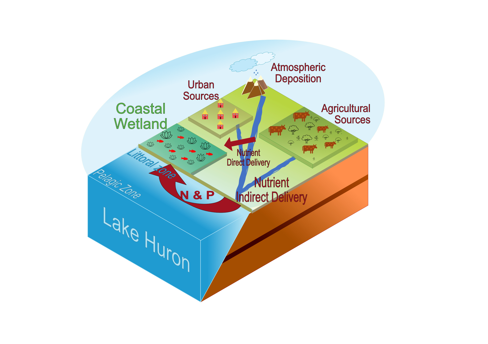
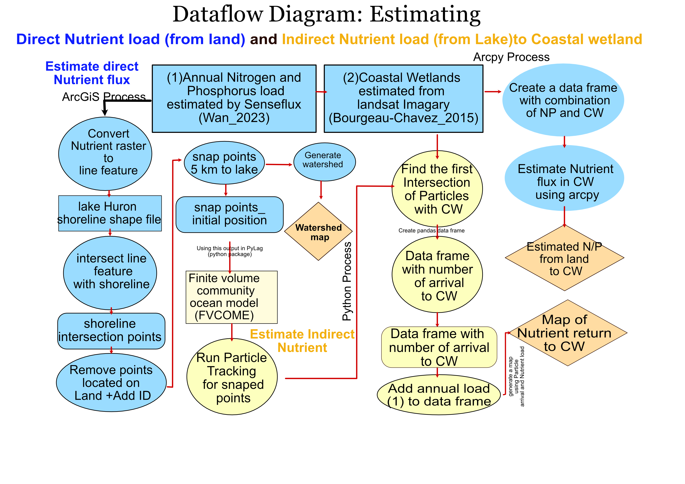

Welcome to CoastalWetland Nutrient Flux estimation
Great lakes Coastal Wetlands are critical ecosystems that provide habitat to wildlife, reduce nutrient runoff to the lakes, and they also act as a major stopover along migratory corridors and prevent flooding.These critical environments are in danger of degradation due to either natural or human induced processes. Great Lakes coastal wetlands are an important and unique place/location to study coastal wetlands. One of the major stressor is nutrient runoff to coastal wetlands. Coastal wetlands receive nutrients either directly from land or indirectly from lake currents. Great Lake Huron has the longest shoreline among all Great lakes which provide a unique location to study Nutrient flux to coastal wetlands.and fill out this gap to know how much nutrients from lakes are returning to coastal areas. In this study we estimate Nutrient run off from land to coastal wetlands of Lake Huron using Senseflux. Also we will estimate the nutrient return to coastal wetlands from lakes using FVCOME and Pylag(particle Tracking) Nutrientflux. Following is showing the concept map to estimate Direct and Indirect Nutrient flux to coastal wetlands

Introduction
Following is showing the work flow of Estimating Nutrient flux in two major step: 1- Direct Nutrient Load 2- Indirect Nutrient Load you can see the work flow 
mkdocs new [dir-name]- Create a new project.mkdocs serve- Start the live-reloading docs server.mkdocs build- Build the documentation site.mkdocs -h- Print help message and exit.
Project layout
mkdocs.yml # The configuration file.
docs/
index.md # The documentation homepage.
... # Other markdown pages, images and other files.